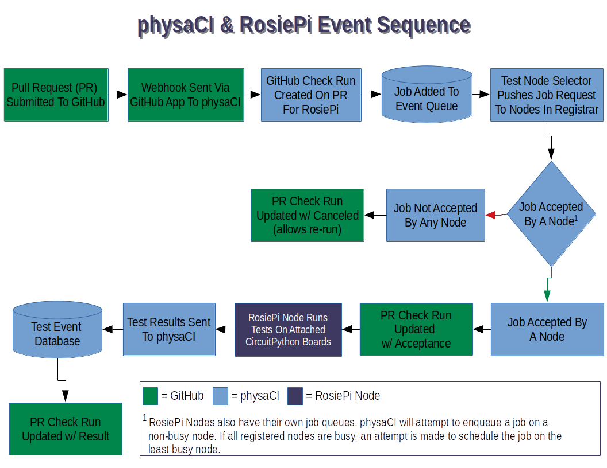

{% include 'header.html' -%}
physaCI, combined with RosiePi, is a Continuous Integration (CI) platform designed to enable automated,
physical testing of CircuitPython firmware changes.
The goal, as with all CI, is to help find code changes that break functionality before they reach the user.
physaCI is the integration layer that links GitHub events with RosiPi test nodes. physaCI runs on
Microsoft Azure, as an Azure Functions serverless application.
RosiePi, is the workhorse of this combination. It is a collection of programs and services configured
to integrate physaCI events with running the actual physical tests. RosiePi test nodes are run on
Raspberry Pi single-board computers. Nodes register
themselves with physaCI on a scheduled basis, allowing physaCI to send push notification-style messages and
queue jobs in a balanced manner. Once a node has queued a test job, it will compile the firmware for each connected
CircuitPython board, using the code in the affected GitHub pull request. The test node will then run tests,
which live in the CircuitPython repository, on the connected board(s). These tests are also pulled from the
affected pull request, allowing tests to be updated with code changes. After tests are completed, the test node
sends the results to physaCI.
Here is an example of the workflow of a single instance:

What's up with the snail? Well, while brainstorming ideas for the backend of the service,
"physical CI" came to mind. Then, it was whittled down to "physaCI" [fizza-see-eye]. You know, cool internet
word play. Then the time came for a logo. Coincidentally, Physa is the genus of a group of small...SNAILS!
Couldn't have planned that...
{%- include 'footer.html' without context -%}